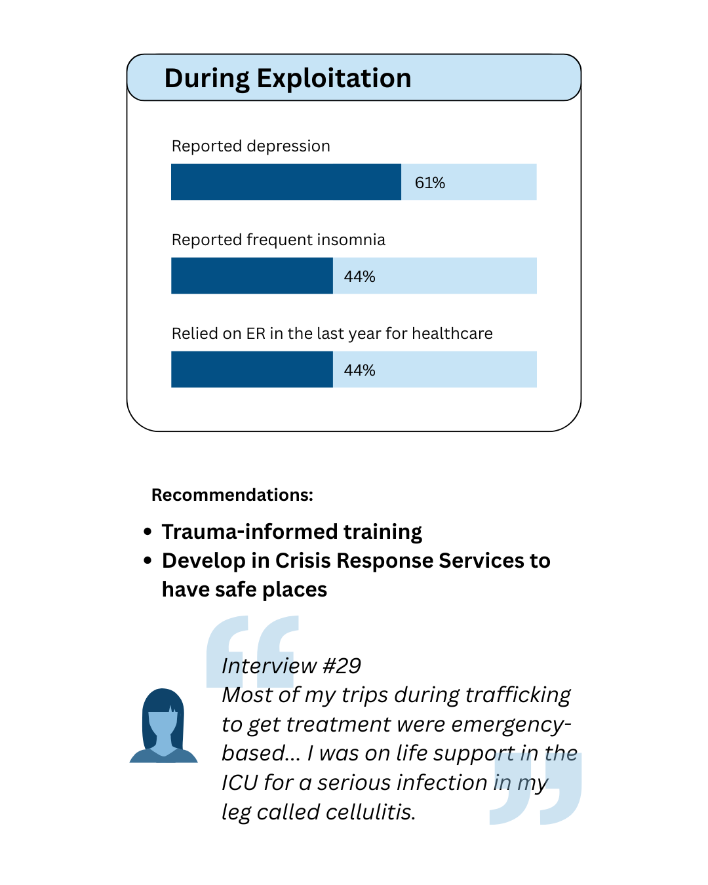
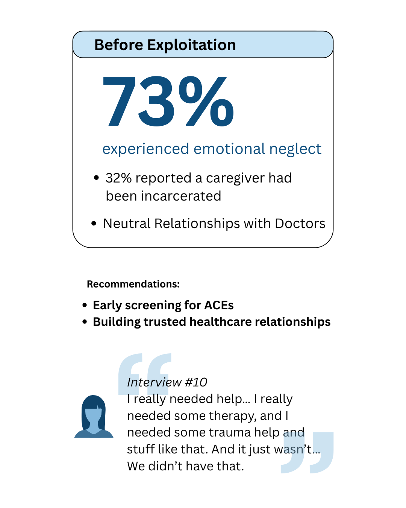

Key Findings
Critical insights from our research on the health and wellness needs of minor sex trafficking victims
Overview of Research Findings
Our comprehensive research reveals significant disparities in health status, healthcare access, and wellness outcomes for youth who have experienced commercial sexual exploitation (CSE). These findings illuminate the complex health challenges faced by CSE survivors and point to opportunities for improved intervention and service delivery.
This study combines quantitative survey results from 510 young people and qualitative interviews with 15 adult survivors who experienced CSE as minors, providing a multifaceted understanding of critical health issues, risk behaviors, healthcare barriers, and protective factors.
Research Overview Visualization
Key Research Insights
Health Concerns
CSE survivors report significantly higher rates of negative health outcomes compared to their peers, with both physical and mental health challenges documented at alarming rates.
- 22% reported poor physical health for more than a week
- 50% reported poor mental health
- 51% experienced frequent or severe headaches
- 47% reported insomnia
- 61% experienced depression
- 57% reported anxiety

Health Risk Behaviors
A substantial percentage of participants reported experiencing Adverse Childhood Experiences (ACEs) and high rates of risky behaviors, creating additional health vulnerabilities.
- 32% reported that a caregiver had been incarcerated
- 73% reported emotional neglect
- 66% reported a caregiver had a mental illness
- 44.3% experienced verbal abuse in relationships
- 29.6% experienced physical abuse in relationships
Those who self-reported exploitation were more likely than those who did not report exploitation to indicate having experienced each ACE assessed. They also reported elevated levels of substance use, including alcohol, vaping, and cigarette use, with a minority reporting use of heroin, cocaine, and methamphetamine.

Healthcare Access
CSE survivors face substantial barriers to accessing appropriate healthcare, even when services are theoretically available to them.
- 68% reported barriers to healthcare access
- 47% lacked health insurance
- 62% felt healthcare providers didn't understand their needs
Many survivors reported avoiding healthcare settings due to fear of judgment or potential mandatory reporting to authorities.
Adverse Childhood Experiences
A substantial percentage of participants reported experiencing multiple adverse childhood experiences (ACEs), creating a foundation for later health challenges and vulnerability to exploitation.
- 85% reported experiencing ACEs
- 73% reported their caregivers had been incarcerated
- 70% experienced emotional neglect
- 66% reported physical illness
Higher ACE scores were strongly correlated with increased vulnerability to CSE and more severe health outcomes.
Protective Factors
Despite the numerous challenges faced, the research identified several important protective factors that can help mitigate negative health outcomes for CSE survivors.
- 58% identified supportive adult relationships as helpful
- 42% found community support services beneficial
- 37% cited school connection as a protective factor
Consistent, non-judgmental relationships with supportive adults were the most frequently cited protective factor in qualitative interviews.
Explore In-Depth Findings
Dive deeper into our research findings through our detailed report sections or interactive data dashboard.